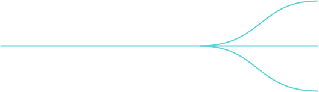
The Past, Present,
The Past, Present,
and Future of Cycle.js
@andrestaltz
Spring 2014
Learned RxJava for AndroidSummer 2014
rxmarbles.comReact = require 'react'
Rx = require 'rx'
Marble = require 'rxmarbles/views/marble'
#
# Renders a stream meant as an input to the play interaction
#
InputStream = React.createClass({
getInitialState: ->
return { serializedStream: [{timestamp: -1}] }
componentWillMount: ->
this.props.stream
.subscribe((serializedStream) =>
this.setState({serializedStream: serializedStream})
)
render: ->
marbles = [Marble({item: i}) for i in this.state.serializedStream]
return (
React.DOM.ul(null, marbles)
)
})
module.exports = InputStream
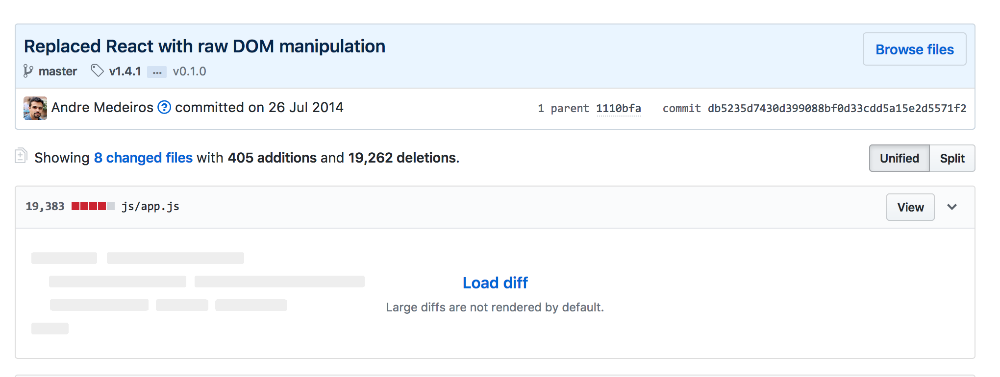
#
# Util functions for rendering to the DOM.
#
module.exports = {
renderObservableDOMElement: (elementStream) ->
wrapper = document.createElement("div")
elementStream.subscribe((thing) ->
wrapper.innerHTML = ""
if Array.isArray(thing)
for element in thing
wrapper.appendChild(element)
else if thing instanceof Element
wrapper.appendChild(thing)
return true
)
return wrapper
}
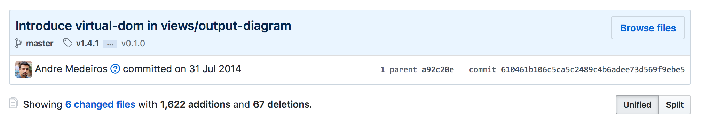
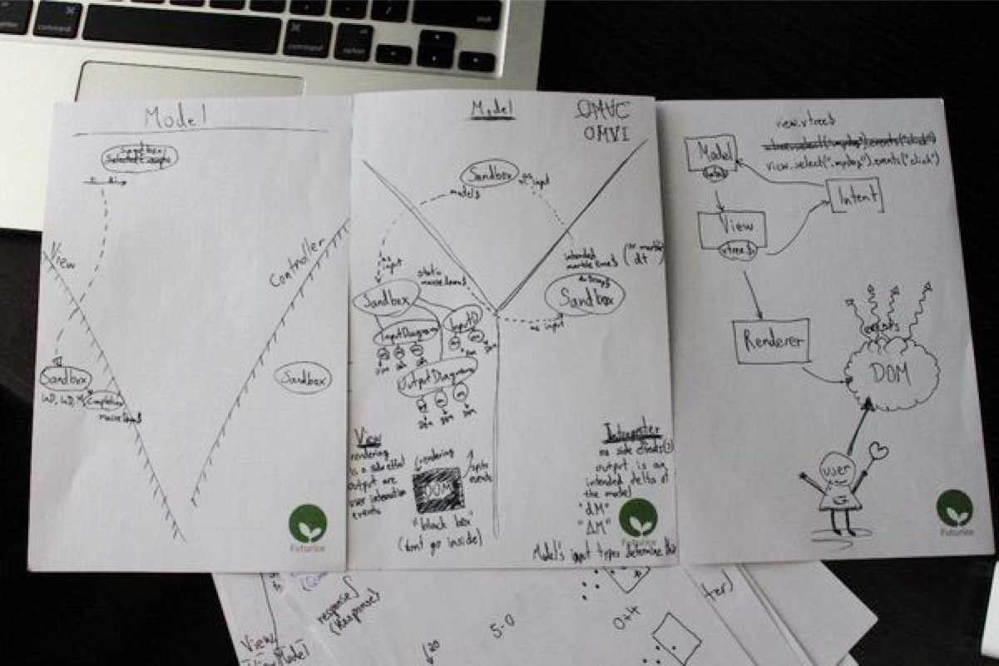
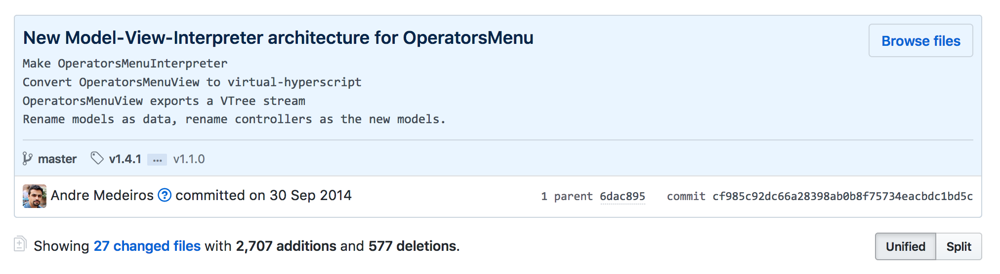
#
# Important Model-View-Interpreter binding function.
#
module.exports = (model, view, interpreter) ->
view.observe(model)
interpreter.observe(view)
model.observe(interpreter)
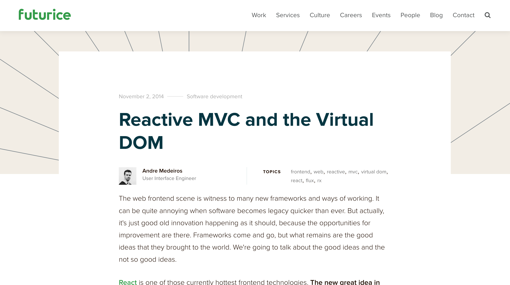
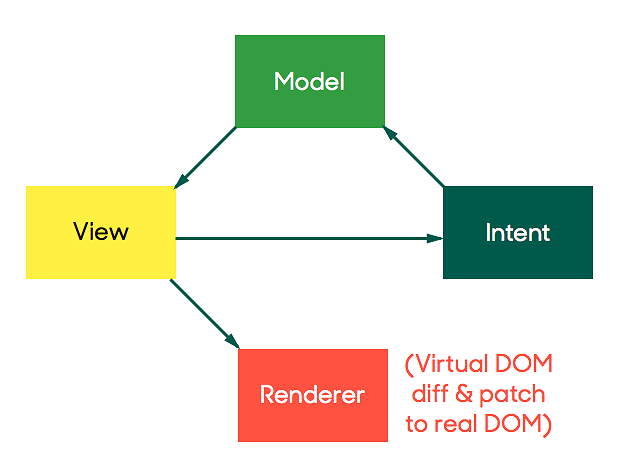
"Model-View-Intent might evolve into a framework, or might not require enough boilerplate to justify a framework."
November 2014
Initial commit- "I know I can use this MVI structure to build stuff"
- "I have a feeling I can use Observables everywhere"
- "I think we can do without `this`, without classes"
- "I think performance will be pretty okay, but let's see"
Movie.js
Muovi
Cycle.js
Open source collaboration starts...
January 2015
Boilerplate reductionvar HelloView = Cycle.createView(['name$'], function (model) {
return {
vtree$: model.name$
.map(function (name) {
return h('div', {}, [
h('label', 'Name:'),
h('input', {
'attributes': {'type': 'text'},
'ev-input': 'inputText$'
}),
h('hr'),
h('h1', 'Hello ' + name)
]);
}),
events: ['inputText$']
}
})
var HelloIntent = Cycle.createIntent(['inputText$'], function (view) {
return {
changeName$: view.inputText$.map(function (ev) { return ev.target.value })
}
})
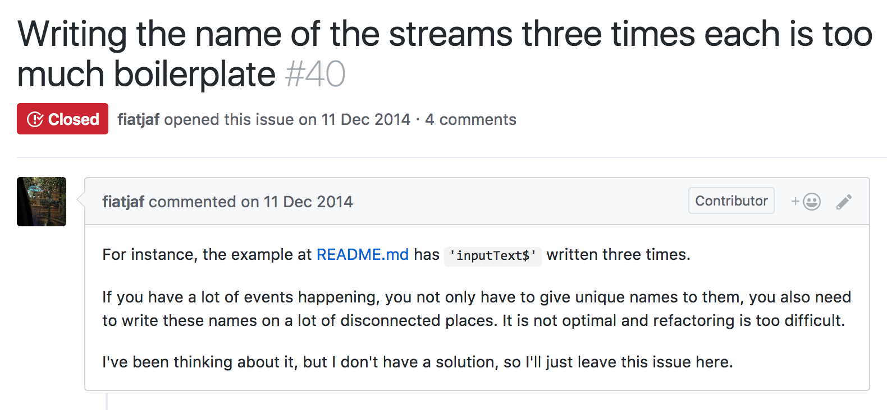
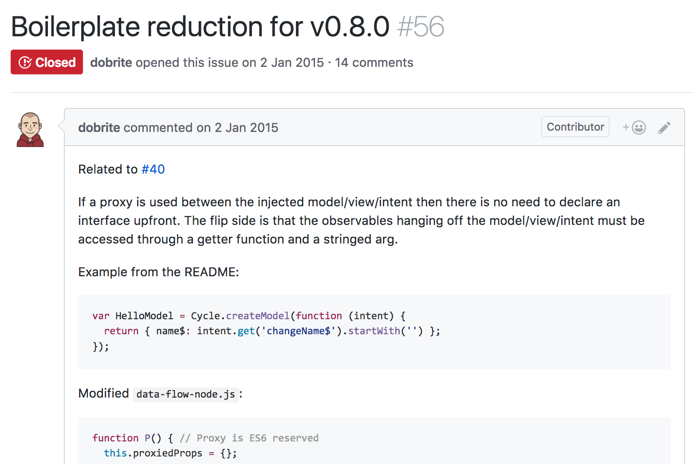
var HelloView = Cycle.createView(function (model) {
return {
vtree$: model.get('name$')
.map(function (name) {
return h('div', {}, [
h('label', 'Name:'),
h('input', {
'attributes': {'type': 'text'},
'ev-input': 'inputText$'
}),
h('h1', 'Hello ' + name)
])
})
}
})
var HelloIntent = Cycle.createIntent(function (view) {
return {
changeName$: view.get('inputText$').map(function (ev) { return ev.target.value })
}
})February 2015
select('.button').events('click')
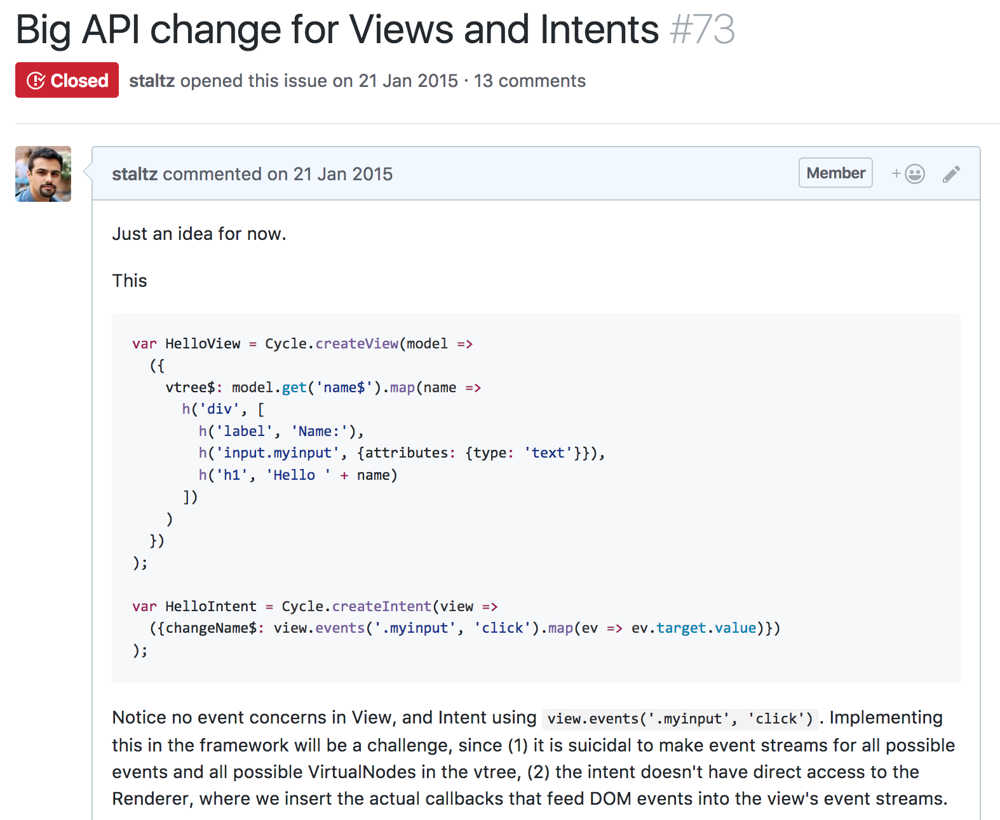
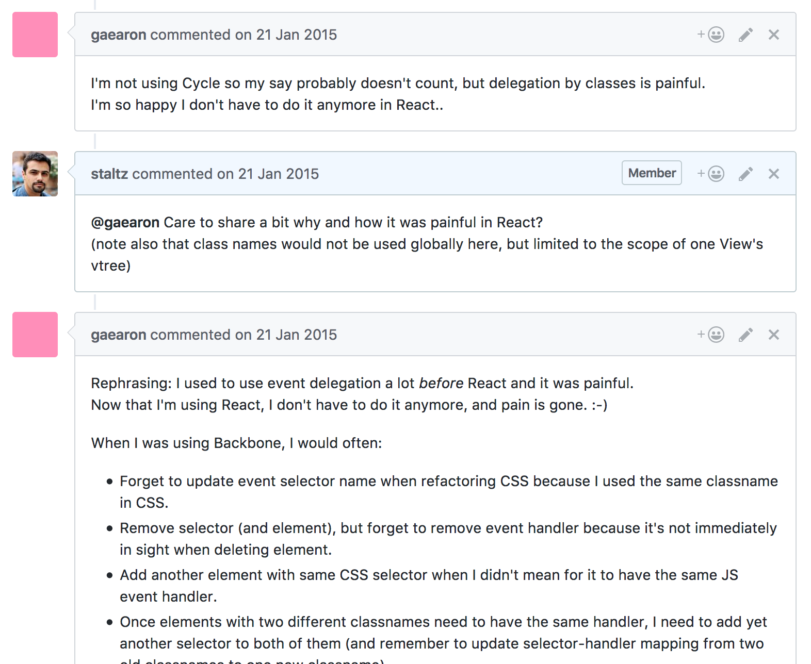
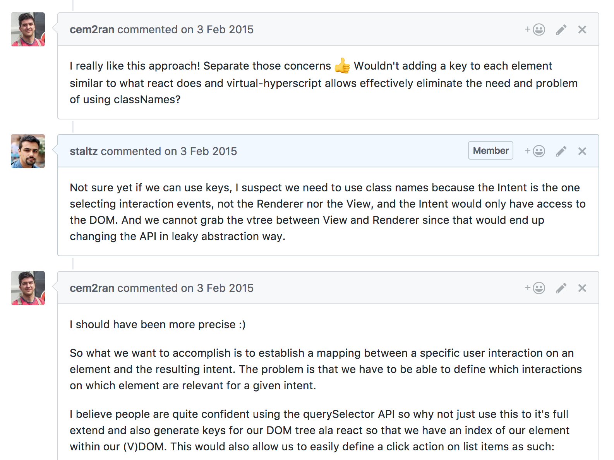
var View = Cycle.createView(Model =>
({
vtree$: Model.get('name$').map(name =>
h('div', [
h('label', 'Name:'),
h('input.field', {attributes: {type: 'text'}}),
h('h1', 'Hello ' + name)
])
)
})
)
var User = Cycle.createDOMUser('.js-container')
var Intent = Cycle.createIntent(User =>
({changeName$: User.event$('.field', 'input').map(ev => ev.target.value)})
)May 2015
Just functions
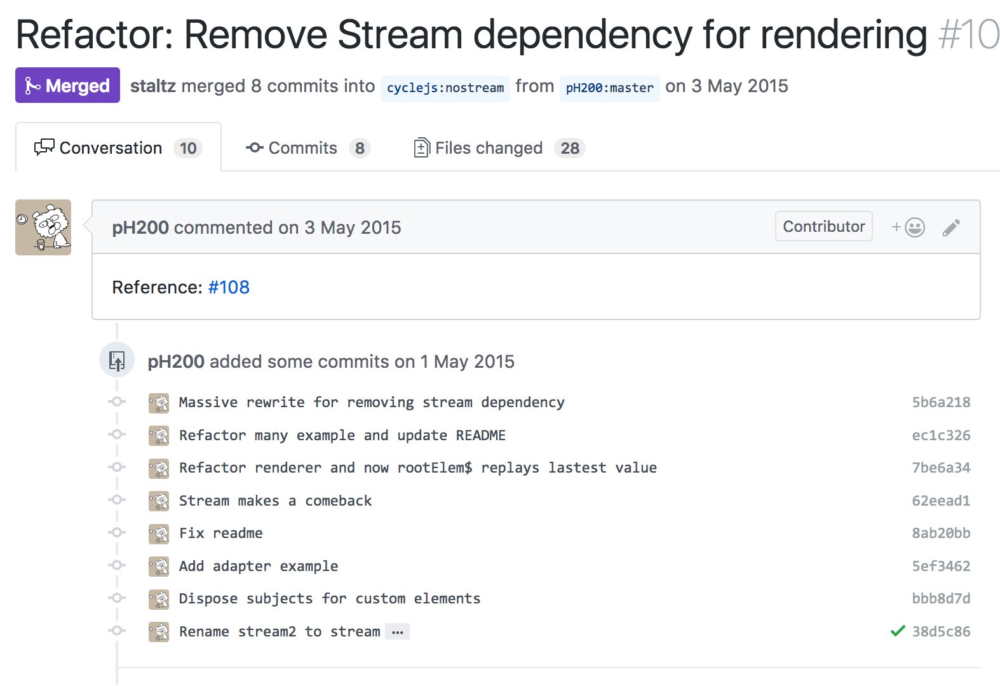
let x = computer(human(x))Before
let bar$ = Cycle.createStream(foo$ => foo$.delay(500).map(foo => 'Hello ' + foo))
// ...
bar$.inject(foo$)After
let bar$ = foo$.delay(500).map(foo => 'Hello ' + foo))
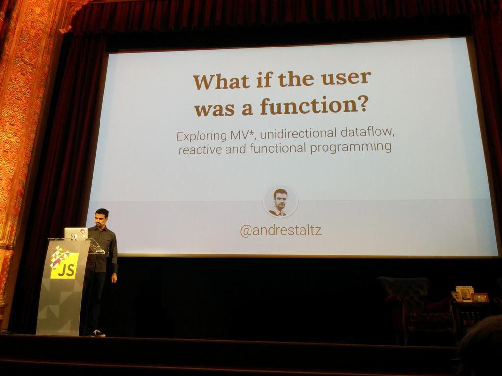
June 2015
Drivers
Oleg Grenrus: "Why just DOM? Generalize it"
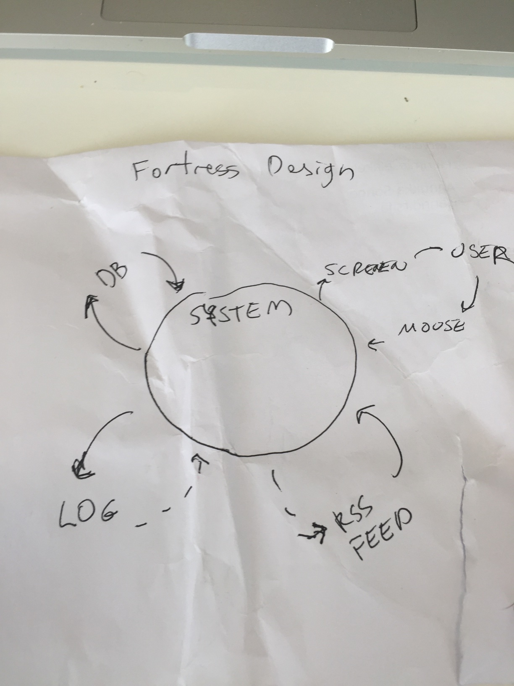
"...you can now externalize side effects from the app"
Before
function computer(interactions) {
return interactions.get(selector, type).flatMap( /* to vtree observable */ );
}After
function main(drivers) {
var vtree$ = drivers.get('DOM', selector, type).flatMap( /* to vtree observable */ );
return {
DOM: vtree$,
driverFoo: // some observable...
driverBar: // another observable...
};
}July 2015
v1.0+ Tylor Steinberger
+ Frederik Krautwald
sinks = main(sources)...
sinks = Button(sources)Nested Dialogues

December 2015
Cycle NestedScopes
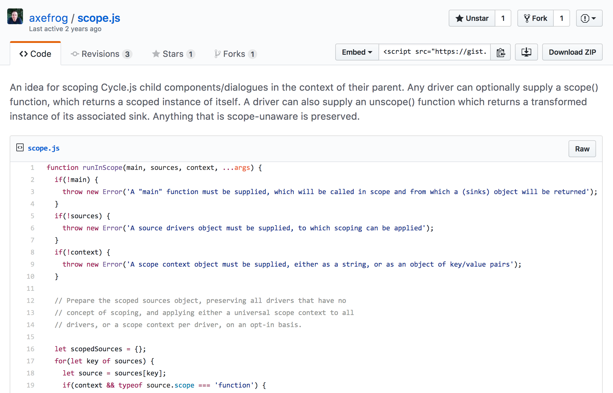
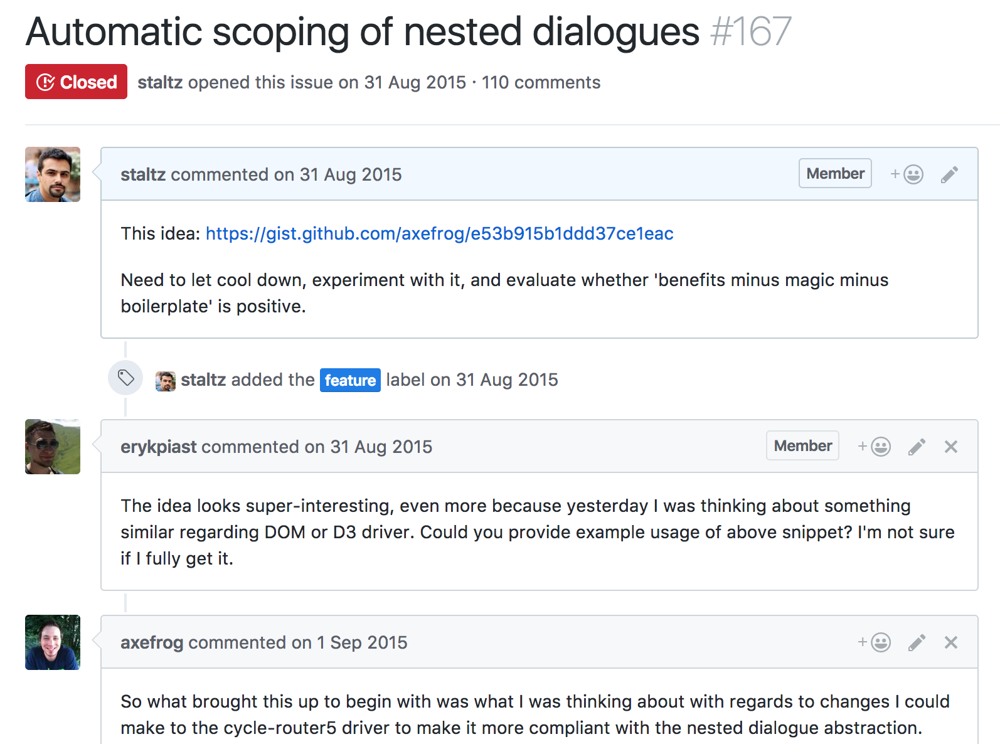
After 110 comments ...
@cycle/isolateMotorcycle.js with most.js
RxJS v5 in development
How do we accomodate these?
May 2016
Cycle Diversity + xstreamLaunched in CycleConf! 🎉
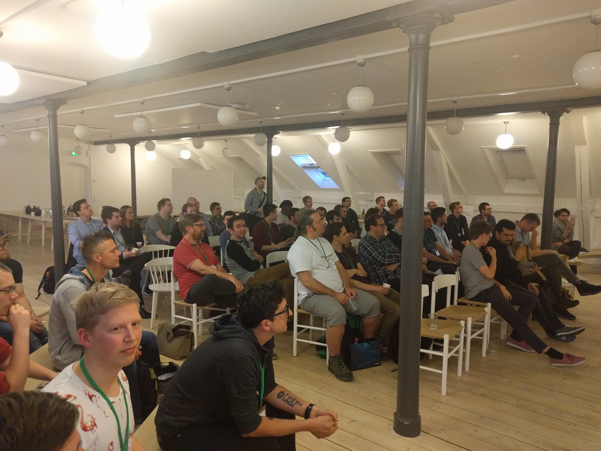